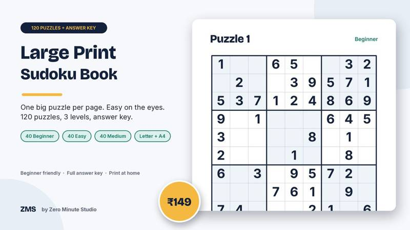
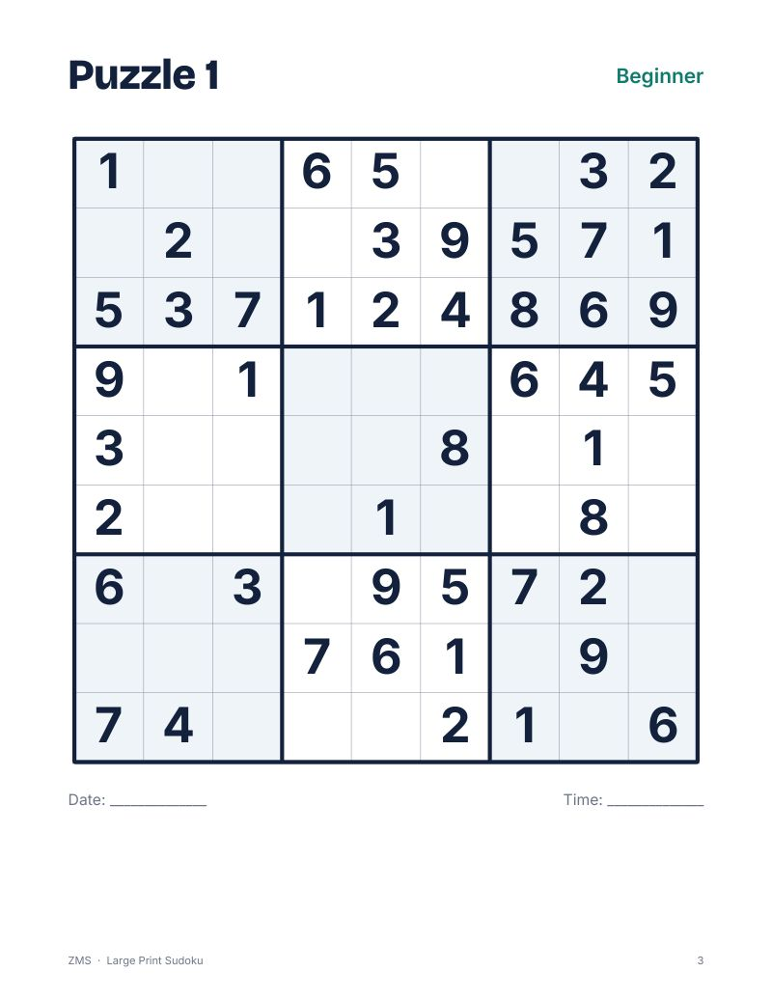
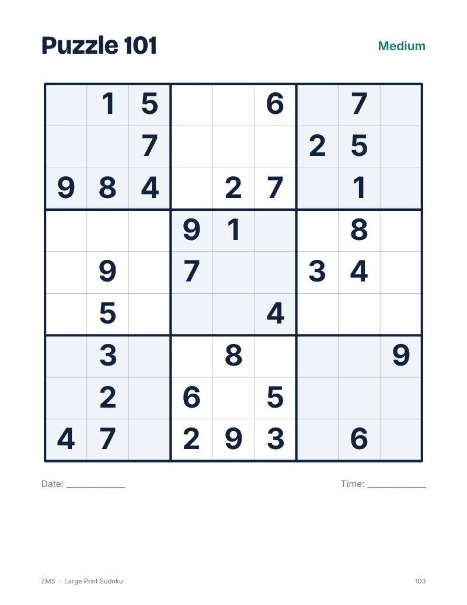
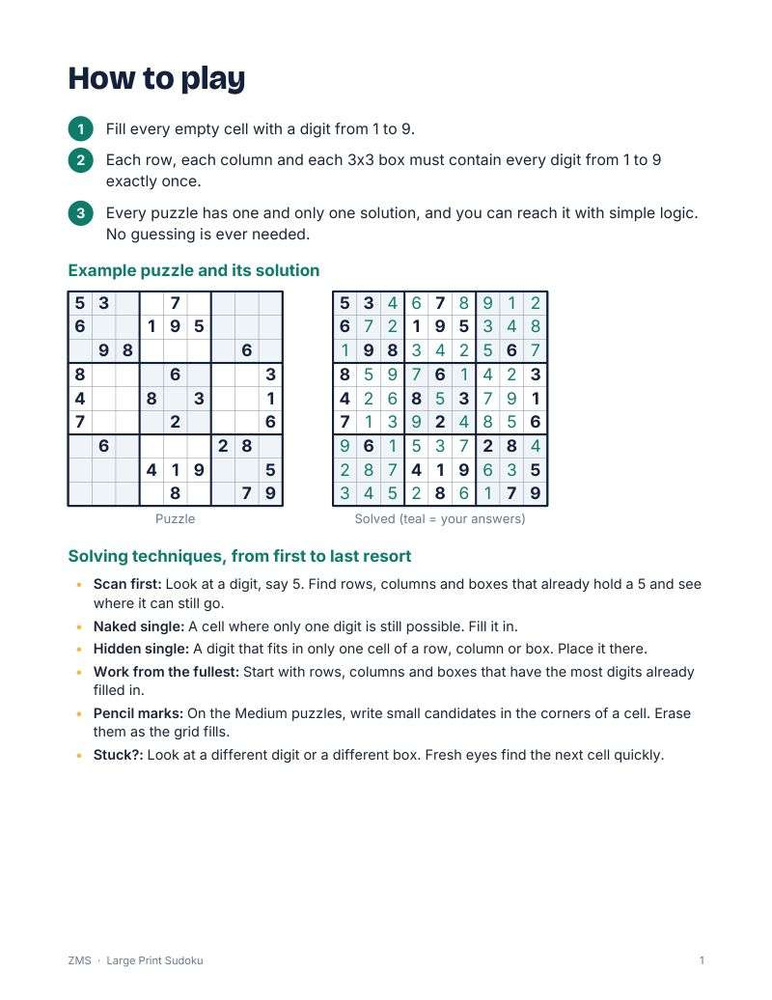
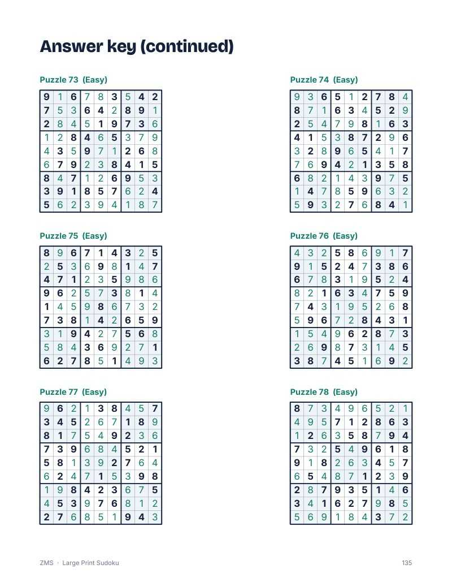

Large Print Sudoku Book: 120 Easy Puzzles

Tiny grids and small numbers make sudoku tiring. This book gives you 120 sudoku puzzles with big, bold digits and one grid per page, so they are easy on the eyes and have room to write. They start gentle and build up. Every puzzle was checked by a solver and has exactly one solution you can reach by simple logic, so you never need to guess.
- 120 puzzles: 40 Beginner, 40 Easy, 40 Medium
- One large grid per page with a date and time line
- Every puzzle verified by a solver to have exactly one solution
- How-to-play page with a worked example and simple solving tips
- Progress tracker to tick off each puzzle
- Full answer key for all 120 grids
- Two print-ready PDFs: US Letter and A4
Preview




FAQ
How does it work? Fill every row, column and 3x3 box with the digits 1 to 9, no repeats.
Is there an answer key? Yes, all 120 solutions are at the back.
How do I get it? Instantly after payment: a US Letter PDF, an A4 PDF and a short README. Print at home.
We don't do refund & return ✌️